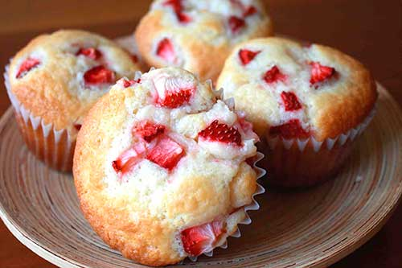
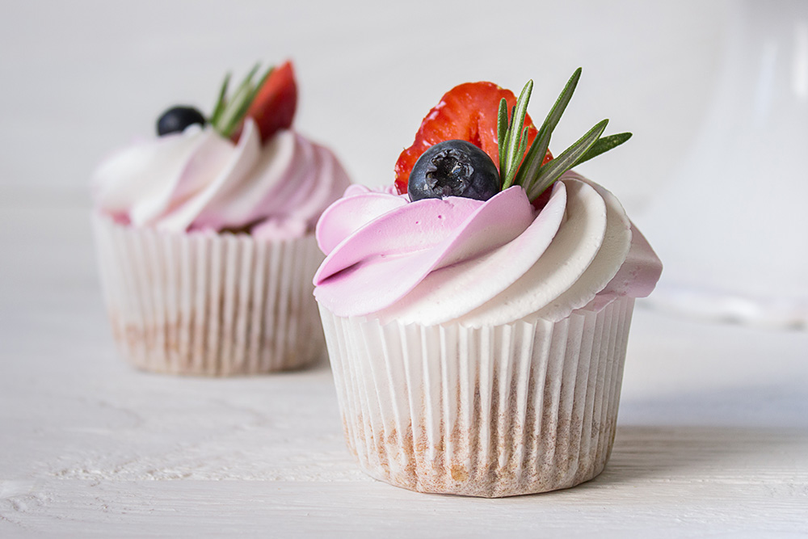
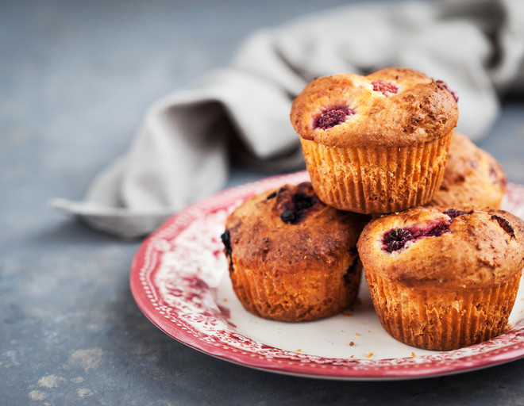
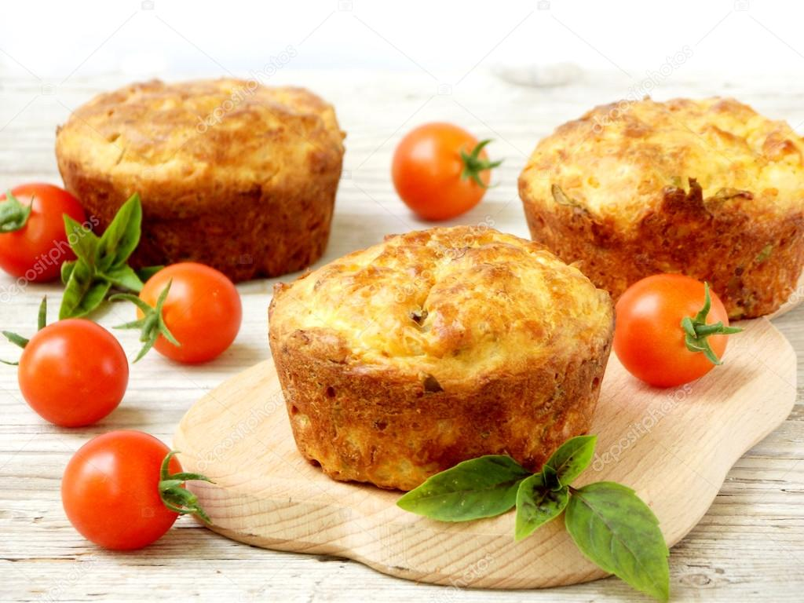

История возникновения кекса
История уходит во времена существования Древнего Рима, в период развития которого было принято смешивать гранат, орехи, изюм и многие другие ингредиенты в ячменном пюре. «Кекс» получил свое название в Средние века благодаря сочетанию старофранцузского «Frui» — фрукты и английского " Kechel« — пирог.
Маффины

Капкейки

Keксы

Соленые eксы
